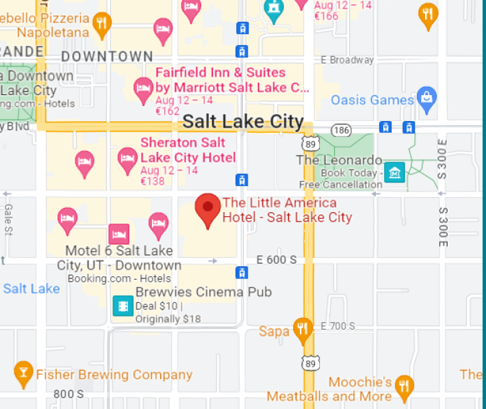

Data
Time
workshop ahead of TAUS 2023 Conference
Introduction to GenAI in Localization
This workshop provides an intensive introduction to generative AI for localization executives. Learn how to implement ChatGPT and its counterparts, and take the first step to transform your localization team into a center of excellence in language models.
Who should attend
- Localization executives
- AI strategists
- Project Managers tasked with evaluating and implementing GPT-4 and alternatives
- Conversational AI and global content specialists
-
Gen AI Landscape:
Gain insights into the emerging landscape of language models, including OpenAI, HuggingFace, Nvidia, Microsoft, Google, Cohere, Steamship, and others. -
Use Cases and Applications:
Explore scenarios where language models come into play in localization and other departments. -
Governance & Risk Management:
Equip yourself with methods to evaluate and score risk, avoid data leaks, and mitigate output inaccuracies. -
Live Projects:
Experts will review 4-7 case studies from l10n teams inside global brands implementing OpenAI technology. Follow the peer analysis of the organizational impact and pitfalls and consider bringing your own use case to benefit from a multi-perspective analysis.
The session requires no prior technical knowledge of generative AI, only an overall understanding of localization. The program is tailored to non-developer executives who are building up their understanding and resources in language AI.
SPEAKERS
Agenda
-
1:00 pm
Warm-up and participant introduction
-
1:15 pm
Emerging GenAI landscape overview
- Landscape components: model builders, prompting environments, data pipelines, leaderboards
- ecosystems (OpenAI & Microsoft, Nvidia, Meta, Hugging Face, others)
- Open-source models to adapt
-
2:00 pm
Interactive QA
Application areas- in localization and global content
- adjacencies
- non-content departments
Participant questions and cases- Case study 1
- Case study 2
-
3:15 pm
Networking break
-
3:45 pm
Hands-on Session (Prompt writing)
- Designing better prompts
- Practical factors: cost, implementation effort, quality gains, and user experience
Anna Zaretskaya
Translations.Com -
5:00 pm
Governance & Legal
risk and change management- data confidentiality
- mitigating hallucinations and documenting risks
- advocacy to become a center of excellence
-
5:45 pm
Wrap-up and takeaways
Registration fees:
BEFORE
September 1, 2023
€ 380
AFTER
September 15, 2023
€ 600
Get your ticket
Location
The workshop will be held at the Little America Hotel in Salt Lake City, on Wednesday 4 October 2023 (the
pre-conference day of the TAUS Annual Conference).

Organizers
This workshop is hosted by Custom.MT in partnership with TAUS.
Konstantin Dranch (kd@custom.mt) - workshop program
Kate Vostokova (kate@custom.mt) - communications and announcements
Please email Konstantin to propose a talk or submit a case study for the event